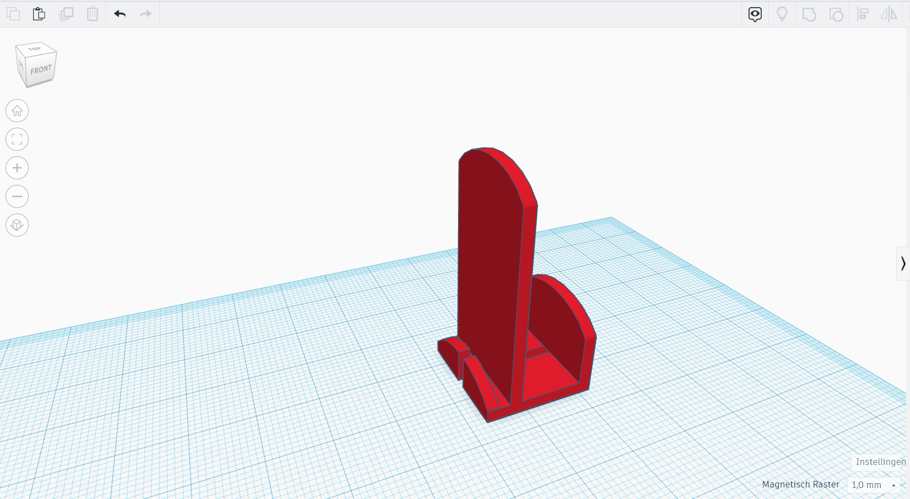
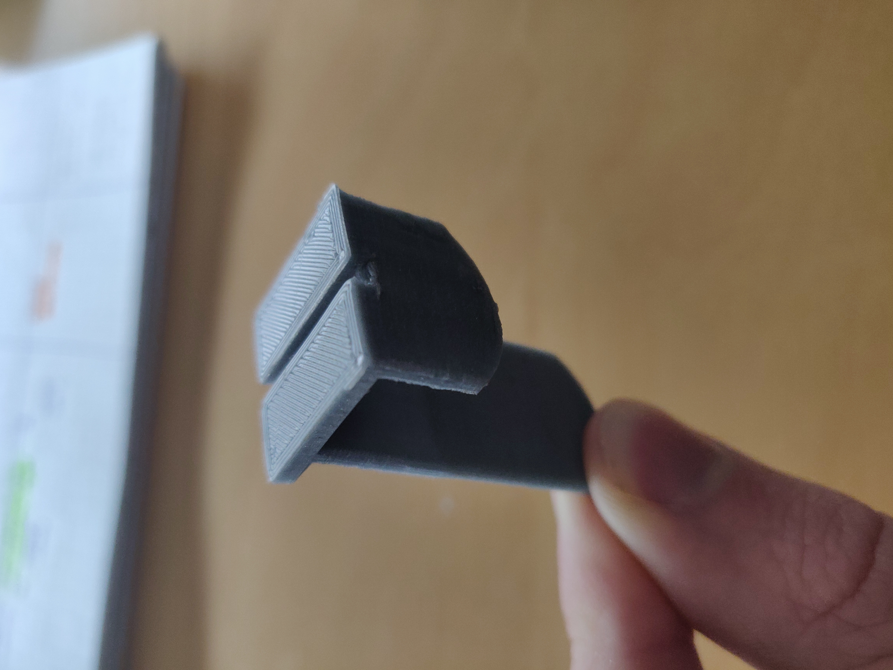

TEABREAKER

Date: APRIL 2022
Medium: 3D Print
Taking time for myself doesn't come naturally to me, I have to make a consious decision for it. A teabreak is a tool for this. However, I noticed any time I was pooring water over my teabag, the bag slipped into the cup. So far for relaxing! Teabreaker solves this issue, by 'breaking' its fall. The design started as a quick sketch (3), which was adapted into a CAD model (4). After several iterations (1, 2), any cup of tea is a perfectly relaxing experience. In fact, I've noticed the extra care put into the beverage translates to extra care for myself.
 